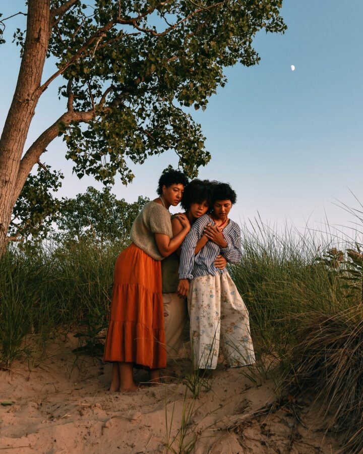

House of Dov’s Three Generations of Women
DPAM invites you to an evening with the House of Dov. The Chicago-based dance company will be performing its new sketch, Three Generations of Women, in conjunction with Barbara Nessim’s work on view in our galleries. Choreographed by Drew Lewis, this movement study, made in reverence to the lineage of women in Lewis’ family, explores the paradoxical ways in which the artist feels both included in and excluded from the nesting doll of womanhood. Three Generations of Women is a portrait, wrapping itself in ancestry, in things handed down: stories, artifacts, and genes.
Image by Chloe Hamilton.